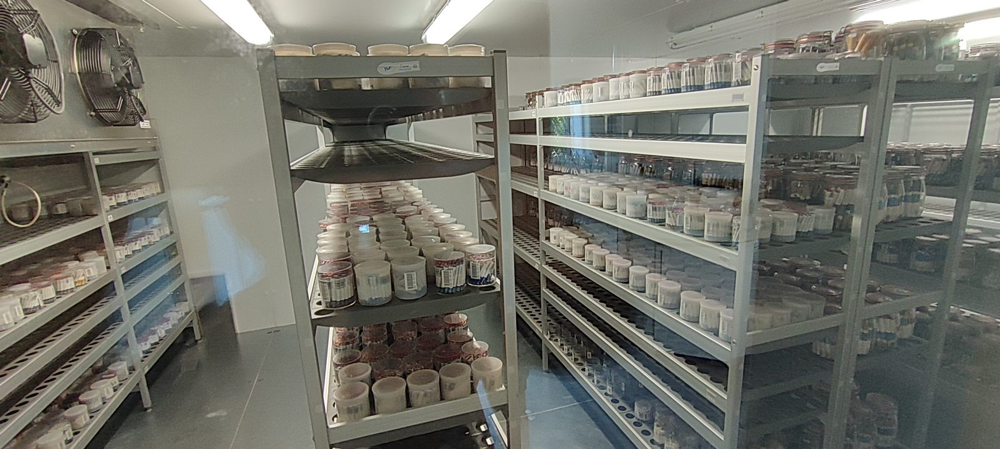
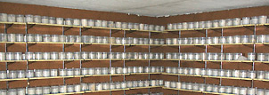

Guardando la semilla de la flora silvestre ibérica
El Banco de Germoplasma Vegetal “César Gómez Campo” conserva a muy largo plazo el germoplasma de especies silvestres, con una de las colecciones de crucíferas (Brassicaceae) más diversas del mundo.
Conservación ex situ al servicio de la ciencia
El Banco de Germoplasma Vegetal de la Universidad Politécnica de Madrid forma parte del Departamento de Biotecnología–Biología Vegetal. Su principal objetivo es contribuir a la conservación ex situ de especies vegetales silvestres.
Está constituido por un banco de semillas, una unidad de conservación in vitro y una unidad de colecciones de campo. La actividad investigadora del Departamento de Biología Vegetal se puede consultar en las memorias de investigación.
Líneas de trabajo
Conservación de semillas
Recolección, procesamiento, almacenamiento y estudio de la viabilidad de semillas de especies silvestres, con especial atención a la flora endémica y amenazada de la península ibérica.
Conservación in vitro
Mantenimiento de material vegetal en condiciones controladas para especies con semillas recalcitrantes o de difícil conservación.
Colecciones de campo
Preservación de plantas vivas en jardines y colecciones especializadas para su estudio y conservación a largo plazo.
Investigación y desarrollo
Proyectos en biología de la conservación, ecología de semillas y adaptación al cambio climático, incluyendo los parientes silvestres de los cultivos.
La familia de las crucíferas
El BGV-UPM nació en 1966 a partir de una pequeña colección de semillas de crucíferas (Brasicáceas) reunida por el profesor César Gómez Campo. Hoy conserva casi 1.000 especies de la familia Brassicaceae en más de 5.000 accesiones — una de las colecciones de crucíferas más diversas del mundo, con especial relevancia para Brassica oleracea y sus parientes silvestres.
Ver todas las colecciones
Plataforma virtual FLAIR-GG
Una red federada de bancos de germoplasma basada en los principios FAIR, que integra datos de pasaporte de múltiples instituciones para mejorar su gestión, documentación y utilización — usando al BGV-UPM como banco modelo.
Descubrir FLAIR-GG- Explora los recursos de la red federada desde un único lugar, sin centralizar los datos.
- Realiza búsquedas y consultas predefinidas mediante estándares internacionales.
- Enriquece los datos de pasaporte conectando con GBIF, EIDOS y otras fuentes abiertas.
Cómo trabajamos con la comunidad científica
Intercambio de germoplasma
Con instituciones científicas nacionales e internacionales.
Asesoramiento técnico
En conservación de semillas y material vegetal silvestre.
Prácticas formativas
Para estudiantes de grado, máster y doctorado.
Visitas guiadas
Para grupos académicos interesados en la conservación ex situ.